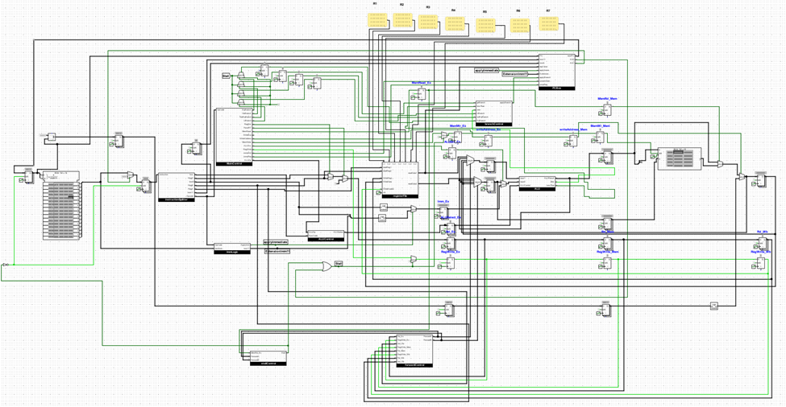

RISC Processor Design

The project involved implementing a RISC processor given some instruction set. Both a single-cycle design and a pipelined design were implemented. The project was completed using Logisim.

“Knowledge is like cheese, there's no such thing as too much cheese.”
Hallo zusammen! My name is Loay Shqair. In addition to being a fan of olives, I also happen to be double majoring in electrical engineering and computer science. I welcome all opportunities that allow me utilize the knowledge I gain in both disciplines in creative, innovative ways.

The project involved implementing a RISC processor given some instruction set. Both a single-cycle design and a pipelined design were implemented. The project was completed using Logisim.

In this project, my goal was to create a program that found the shortest safe path for an agent to follow to reach a treasure in a maze. Programmatic representations for relevant entities were created, a graph state-space representation was initialized, and multiple search algorithms were run and their performances compared. The project was completed using Java.